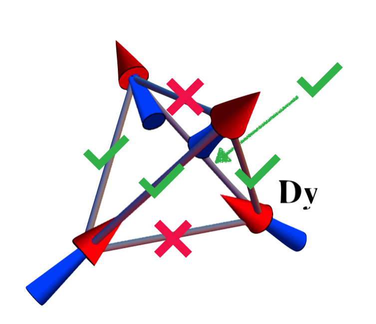

You can orbit and pan around the scene below with left and right clicks respectively. Drag the sliders around to adjust the opacity of the various parts that make up the rendering, and hover over the controls for more information.
|
System Size
The number of unit cells on one side of the cube.
|
Breathing Anisotropy
The difference between the size of the 'up' and 'down'
tetrahedra. This is not just cosmetic, it also affects the physics of the simulation!
|
|
Main Diamond Terahedra
Opacity of the imaginary tetrahedra connecting nearest-neighbour spins. These
are the oxygen atoms of water ice.
|
Pyrochlore Opacity
Opacity of the small black arrows / dots, which represent the real magnetic
spins in the system.
|
|
Dual Diamond Tetrahedra
Opacity of the imaginary tetrahedra connecting nearest-neighbour plaquettes.
|
Plaquette Opacity
Opacity of the imaginary tetrahedra connecting nearest-neighbour plaquettes. In water ice,
there is nothing actually here; in spin ice materials the plaquette centres are usually non-magnetic
scaffolding atoms (e.g. Ti in Dy2Ti2O7)
|
|
Show Non-Contractible Surfaces
Highlights three (distinct) closed surfaces that cannot be deformed into points. These are
related to the nontrivial elements of the deRham cohomology of T3.
|
Show Quasiparticles:
Changes how tetrahedra are rendered. Spinons live on the original tetrahedra;
visons on the dual tetrahedra.
|
|
Show system as
|
Temperature:
The temperature of the Monte Carlo simulation. Higher temperatures lead to
random noise, lower temperatures freeze out any motion.
|
|
Classical Spin Ice
|
Initialise to ordered state |
|
Semiclassical Quantum Spin Ice
|
Tick Rate:
The number of Metropolois moves to attempt on each spin per second.
$s^{-1}\text{spin}^{-1}$
|
Each of the arrows above represents a spin, a tiny magnet associated with an atom of e.g. Dysprosium. These spins interacts following a simple rule - across every `bond' (straight black line), the unlike poles attract while like poles repel. But there's an issue - this lattice is geometrically frustrated, i.e. it is impossible to satisfy all of the bonds. The best you can do satisfies only 4/6:
The interesting part is that there is no unique way of doing this everywhere - unlike more pedestrian, unfrustrated systems (like the magnets on your fridge), there are an extensive number of potential ground states (i.e. lowest-energy states) for classical spin ice.
This is a direct analogue of the water ice originally identified by Pauling
(1935) as having a residual entropy at zero
temperature. Spins are Ising-like, i.e. they may only
point up or down, rendering this a purely classsical model - all of the $\sigma^z$'s commute. The
Hamiltonian is
$H = \sum_{\langle ij \rangle} J_{A/B}^{zz} S^z_i S^z_j$
where the couplings $J_{A/B}$ are $J_A$ ($J_B$) if the bond is an edge of an `up' (`down') tetrahedron.
Depending on the breahting anisotropy you set, either the $A$ or $B$ tetrahedra will
become bigger; by default they are the same size.
The 'Classical Spin Ice' simulation performs Metropolis steps on this Hamiltonian at the specified temperature. Tetrahedra are coloured red/blue to distinguish postive
and negative
You should see a mess of initial spinons, which all eventually anneal out to a small handful that persist for long times. This is a signature of topological protection - an isolated spinon cannot be removed from the system by local spin flips, it must wander and collide with a spinon of the opposite charge to be removed. In this sense, we have behaviour reminiscent of electrons and positrons (anti-electrons) - spinons form particle-antipartcle pairs. This model does a very good job at describing the rare-earth compounds Dy2Ti2O7 and Ho2Ti2O7, and 'spin ice physics' (i.e. the emergence of classical quasiparticles from geometrically frustrated Ising models) is now known to be relevant in a vast assortment of other materials. In the simple model presented here, spinons move diffusively - squinting one's eyes, they are executing a 3D random walk. This is a significant departure from the behaviour of a billiard-ball like 'particle'.
\[H_{\rm eff} = P\left[V + V \frac{Q}{E-H_0} V + V \frac{Q}{E-H_0} V \frac{Q}{E-H_0} V + ...\right]P\]
where
The leading non-constant term comes at third (!) order, \[H_{eff} = \left(\frac{3J_{\pm,A}^3}{4J_{zz,B}} + \frac{3J_{\pm,B}^3}{4J_{zz,A}}\right)\sum_p \mathcal{O}_p + \mathcal{O}_p^\dagger\] where the hexagon-flip $\mathcal{O}_p = S^+_1S^-_2S^+_3S^-_4S^+_5S^-_6$ is an alternating product of ladder operators around an elementary hexagon.